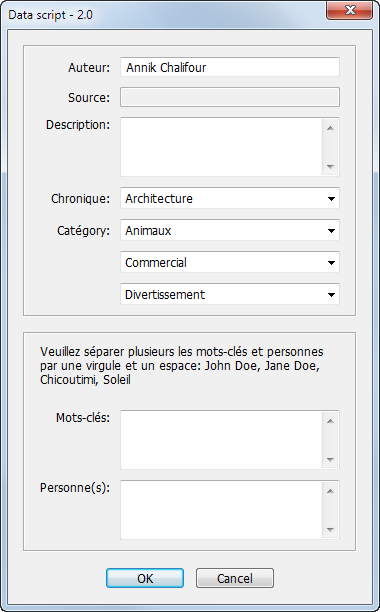

Data script
Scipt for InDesign CS5 version 2.0

Task:
This 'Data' panel allows the user to add XML attributes and values to the active story.
Auteur:
Attribute name = Author
Attribute value = Inputted by the user in the text field
If 'signature.auteur' has been applied to the article, then it is automatically show in this field
(added as an attribute).
Source:
Attribute name = Source
Attribute value = Inputted by the user in the text field
If 'signature.source' has been applied to the article, then it is automatically show in this field
(added as an attribute).
Description:
Attribute name = Description
Attribute value = Inputted by the user in the text field
Chronique:
Attribute name = Chronicle
Attribute value = Inputted by the user in the pulldown menu. The pulldown menu is populated
by a CSV file located in the path Volumes/L'Express/Rйpertoire/Csv/chronicle.csv
Category:
Attribute name = Category
Attribute value = Inputted by the user in the pulldown menu. The pulldown menu is populated
by a CSV file located in the path Volumes/L'Express/Rйpertoire/Csv/category.csv
The user may choose 1,2 or 3 categories. If the user selects a category in a pulldown menu, the
same category will not be available in another pulldown menu.
Mots-cles:
Attribute name = Keywords
Attribute value = Inputted by the user in the text field.
Personne(s):
Attribute name = People
Attribute value = Inputted by the user in the text field.
Download the script from here.
Go back to the main Scripts for L'Express de Toronto Inc. page